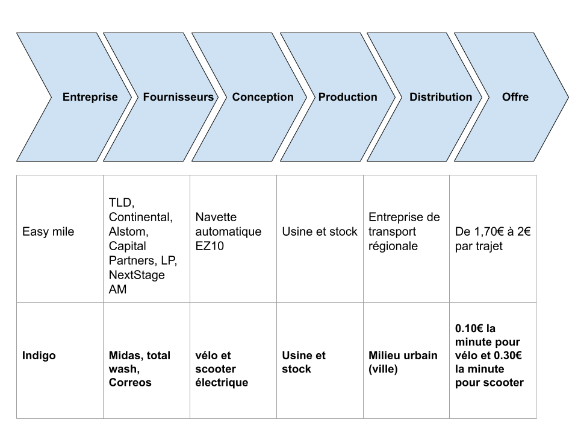

Indigo (Testa Thomas)
Présentation de chaque organisation :
caractérisation de l'organisation
Indigo est une entreprise française, elle opère pour des
acteurs publics et privés, à l'international. Durant cette SAE nous nous intéresserons aux
activités que propose Indigo à Toulouse.
Historique présentation du contexte
2001: Vinci Park est créé suite à la fusion entre Sogeparc et Parcs GTM.
2015 novembre: Vinci Park devient Indigo.
2016 juin: Vinci cède à Ardian et Crédit Agricole Assurance la part qu'il détenait encore
dans la société Indigo. Depuis, la société est désormais contrôlée par Vauban Infrastructure
Partner (33,17%), Crédit Agricole Assurance (47,52 %), MEAG (14,36%), et Infra Foch Topco
(0,50%), le solde étant détenu par le management.
2017: Indigo Weel lance un service de vélos sans station à Metz. Cette formule est rapidement
dupliquée à Tours, à Bordeaux puis à Lyon (Aujourd'hui le service a fermé dans certaines de ces
villes).
2018: Le service de 2017 est dupliqué à Toulouse.
Présentation de l'activité et des parties prenantes
A Toulouse Indigo développe 3 activités: exploitation des vélos et scooters, développement
digital, aménagement urbain.
Description des modèles économiques :
Présentation du/des produits ou services proposés
Indigo propose de louer un vélo ou un scooter via une application mobile.
Liste des principales dépenses
Leurs principales dépenses se font dans le développement digital.
Listes des principales recettes
Les principales recettes se font principalement par leurs partenaires: Midas, Total Wash;
Correos.
Type de modèle adopté
Le type de modèle adopté est la location.
Etude des chaines de valeurs :
Lister les activité principal
Leurs activités principales sont l’exploitation des vélos et scooters et le développement
digital
Lister des activités secondaire
Leur activité secondaire est l’aménagement urbain.
Outils de diagnostic externes et internes
Analyse des forces concurrentielles avec un outil adapté
Indigo domine largement le marché concurrentielle car
Analyse de l'environnement avec un outil adapté
Tous les services proposés par Indigo fonctionne avec l'énergie motrice humaine (vélos) ou
alors avec de l'électricité (scooter). Indigo est donc une entreprise plutôt écologique.
Comparaison des choix stratégiques
Présentation des stratégies corporate et/ou buisness

Exemple de moyens de mise en oeuvre
La répartition de vélos et de scooters dans un lieu donné.
Cohérence d'ensemble
Choix des organisations/ Conformité à la demande
Nous avons choisi deux entreprises qui ont le même domaine de travail notamment le
transport et l’écologie.